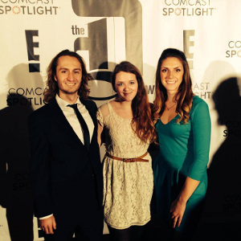
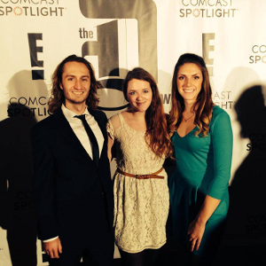

About
I'd describe myself as curious, integrative, and collaborative. I like to know how things work, I like to connect the dots between ideas + concepts, and I love to work with other people.
During my undergrad at the University of Michigan, I was a bit of a dabbler:
- I wrote and narrated an ad for an Ann Arbor/Detroit transit program
- I facilitated dialogues on race, gender, and sexuality
- I taught creative writing to male prison inmates
 
